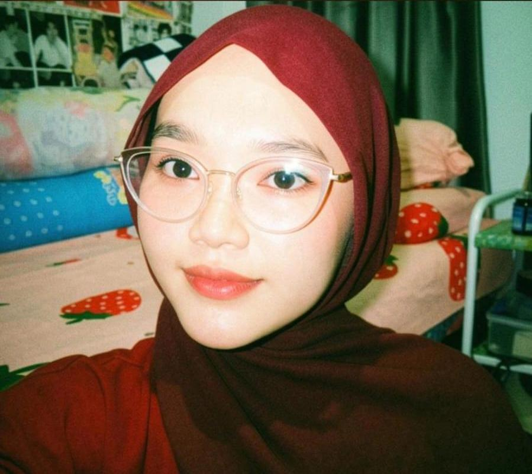

Khoirun Nisak
Hallo! Saya adalah mahasiswi Sistem Informasi di Institut Teknologi PLN Jakarta. Saya memiliki ketertarikan besar di dunia UI/UX design menggunakan Figma dan pengembangan aplikasi web. Saya suka bikin kreasi digital yang bersih, estetik, ceria, dan ramah pengguna. Saya sedang belajar mengembangkan diri dengan banyak belajar di mata kuliah Pemrogaman Web💕
🌸 Keahlian & Skill
⭐ Harapan 2 Semester ke Depan
- Menguasai Framework Modern: Berharap dapat lancar belajar framework frontend biar bisa bikin website interaktif yang makin canggih.
- Membuat Desain Portofolio Figma: Ingin menyelesaikan minimal 3 studi kasus UI/UX yang matang buat diunggah ke Behance.
- IPK Bagus & Cari Tempat Magang: Bertekad mempertahankan nilai akademik yang maksimal agar dapat magang di perusahaan impian!